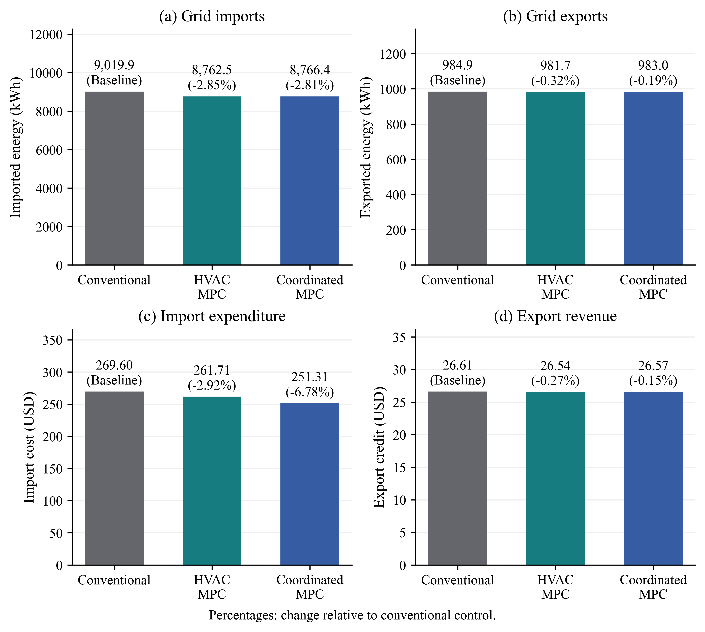
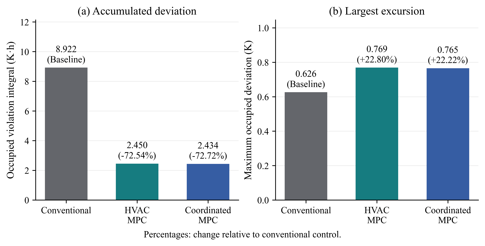
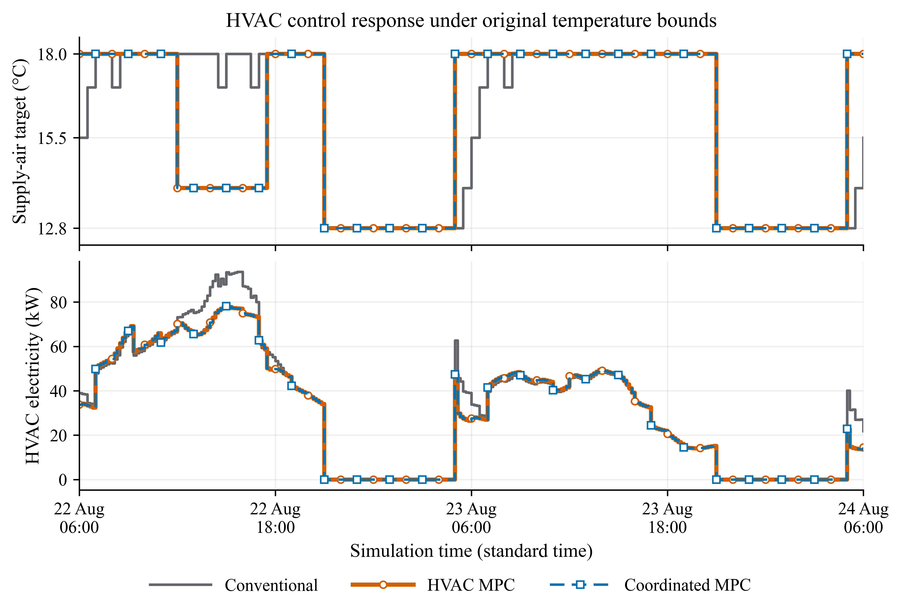
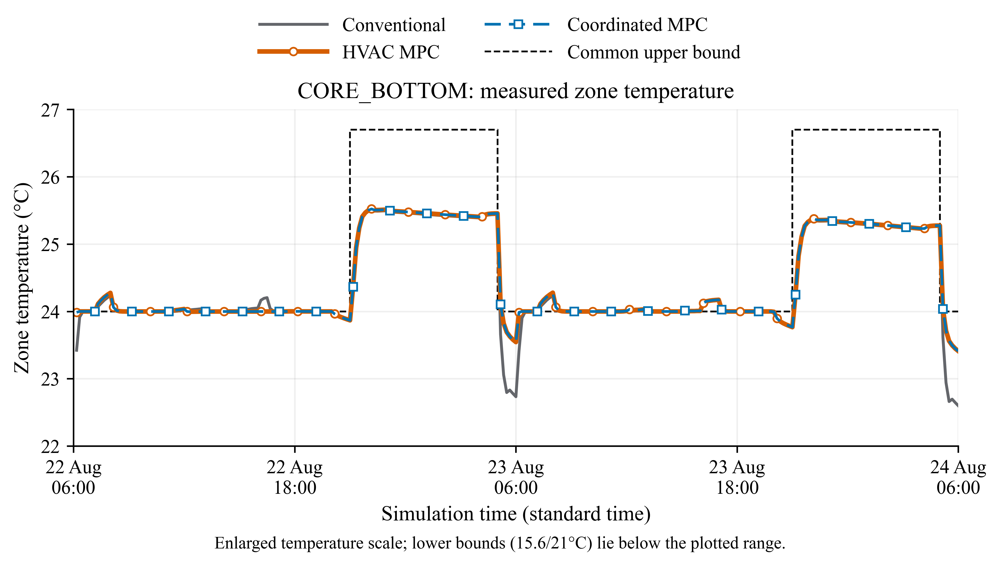
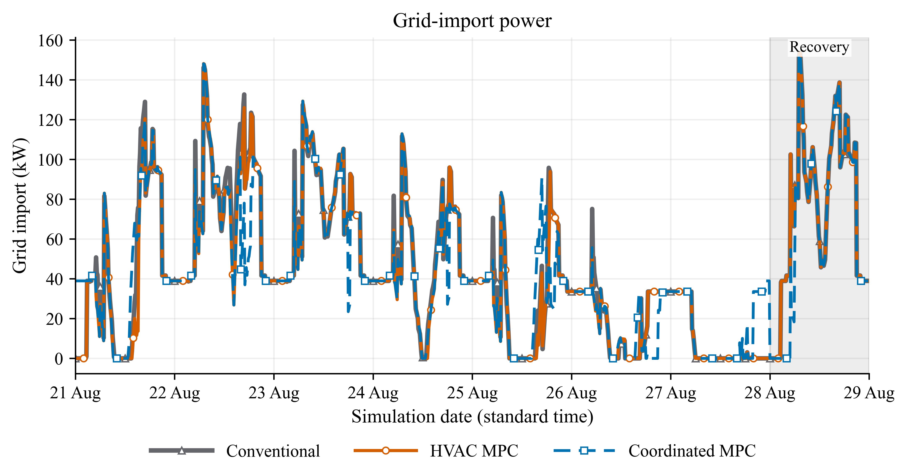
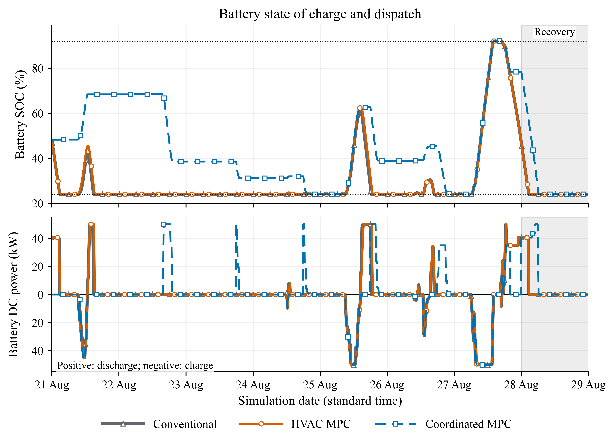
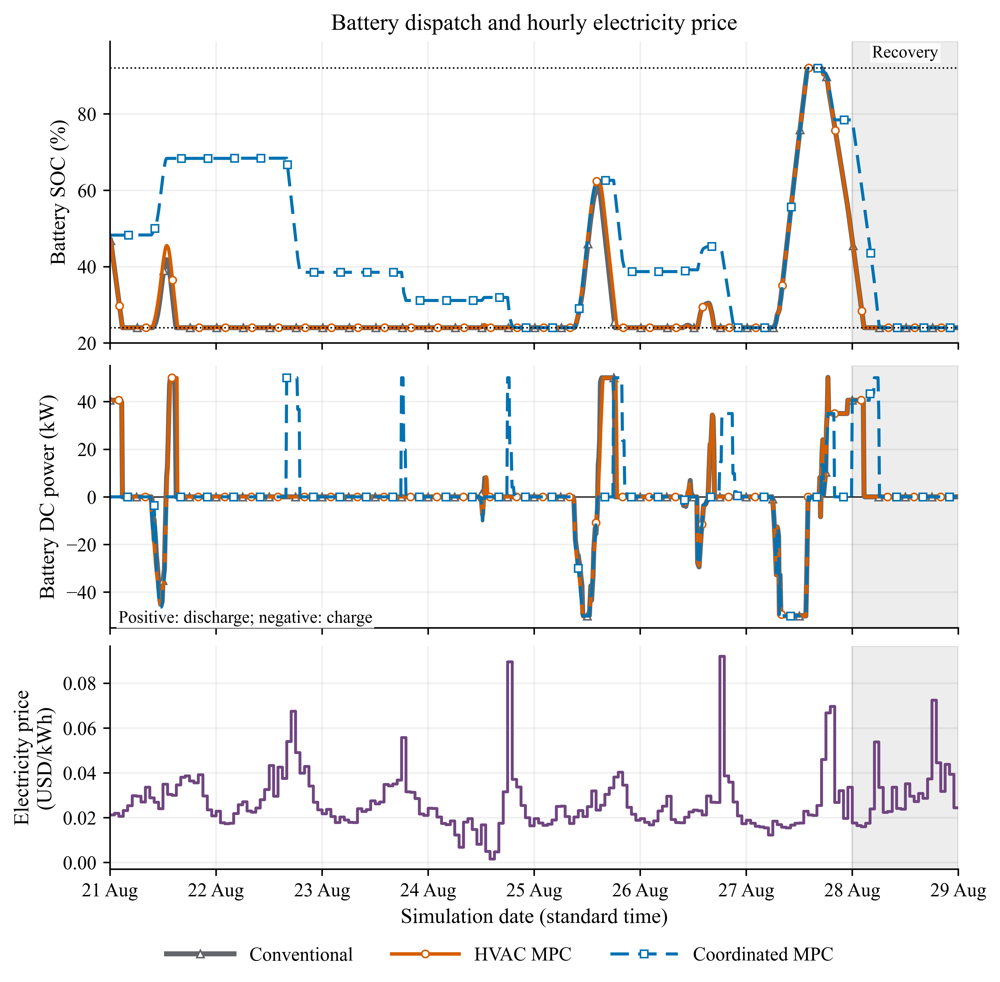
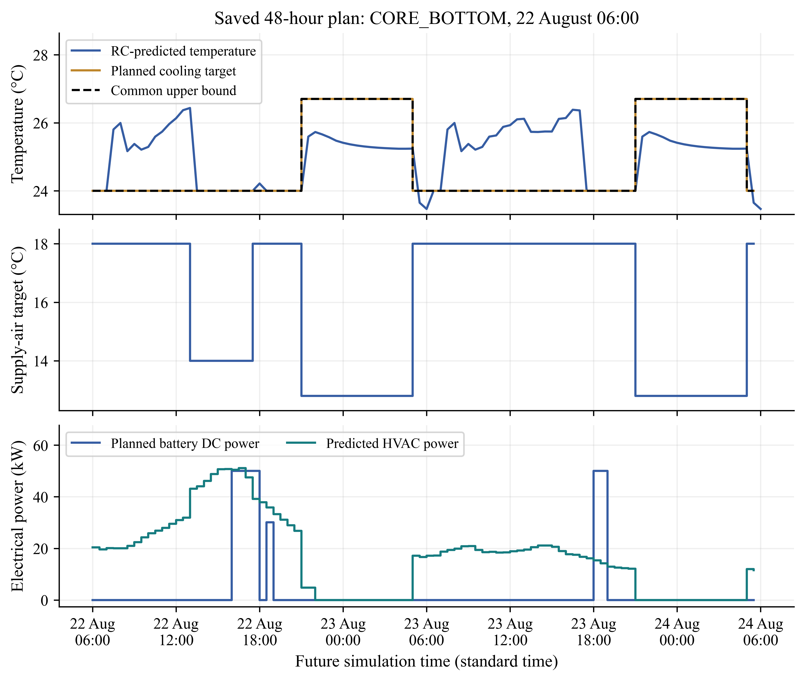

Conventional control, HVAC MPC and coordinated MPC
Principal comparison using the original common temperature-command bounds.
The DOE Medium Office, 80% roof PV, 413.25 kWh NMC battery, weather, occupancy,
equipment and operating limits are unchanged across these three saved cases.
Reporting period: 20-28 August 2017, 216 hours: one conditioning day, seven controller evaluation days and one common recovery day.
Conventional denotes native thermostat/VAV control with a reactive supply-air-temperature reset, not the unmodified EnergyPlus schedule. All three have the same allowed cooling-command limits and supply-air-temperature options: 12.8, 14, 15.5, 17 and 18°C. Equal command limits do not guarantee identical achieved temperatures.
Conventional: native zone thermostat/VAV controls with current-temperature-based supply-air-temperature reset and greedy battery operation. No RC predictions enter its decisions.
HVAC MPC: the identified RC model evaluates HVAC policies over 48 hours; the battery uses the same greedy rule as conventional control.
Coordinated MPC: 48-hour HVAC policy selection and predictive battery dispatch consider grid-import energy and net import/export cost.
Main results
Metric
Conventional
HVAC MPC
Coordinated MPC
HVAC electricity (kWh)
5,287.85
5,033.27
5,035.63
Whole-building electricity (kWh)
17,847.63
17,593.05
17,595.41
Grid imports (kWh)
9,019.87
8,762.55
8,766.36
Grid exports (kWh)
984.89
981.72
983.04
Import cost (USD)
269.60
261.71
251.31
Export credit (USD)
26.61
26.54
26.57
Net electricity cost (USD)
242.98
235.17
224.74
Occupied violation integral (K h)
8.922
2.450
2.434
Maximum occupied deviation (K)
0.626
0.769
0.765
Net electricity cost = import cost minus export credit. The same hourly BES-H price is used for import and export; this is an energy-price scenario, not a complete retail bill. Occupied violations sum the distance outside the original scheduled temperature bounds multiplied by interval duration across all occupied zones. They are not simply hours of discomfort.
HVAC MPC versus conventional: HVAC electricity 4.81% lower, grid imports 2.85% lower, net electricity cost 3.22% lower and occupied violation integral 72.54% lower.
Coordinated MPC versus conventional: HVAC electricity 4.77% lower, grid imports 2.81% lower, net electricity cost 7.51% lower and occupied violation integral 72.72% lower.
Coordinated MPC has slightly higher imports than HVAC MPC but lower import expenditure. Export credits are similar. Its financial improvement therefore principally reflects the timing of imported electricity. The coordinated comparison changes both HVAC objectives and battery scheduling; it is not a battery-only ablation.
Figures for the thesis
Use the vector PDFs in LaTeX. All PDFs embed Times New Roman; 600 dpi PNG copies are provided. A separate enlarged temperature figure accompanies the combined control-response figure. No simulation was rerun or retuned to produce these figures.
HVAC electricity and net electricity cost for the three controllers under the original common temperature-command bounds. Totals cover 216 hours, including conditioning and recovery. Conventional denotes native thermostat/VAV control with reactive supply-air-temperature reset. Net cost is import expenditure less export credit. Parenthetical percentages are signed changes relative to conventional control, calculated from unrounded totals; negative values indicate reductions and positive values indicate increases.Vector PDF | 600 dpi PNG

Grid imports, grid exports, import expenditure and export credit over the same 216-hour period with original common temperature-command bounds. The same hourly BES-H energy price is applied to imports and exports. The panels show distinct quantities and use separate scales; export credit is revenue deducted from import cost. Parenthetical percentages are signed changes relative to conventional control, calculated from unrounded totals; negative values indicate reductions and positive values indicate increases.Vector PDF | 600 dpi PNG

Occupied temperature deviations from the same original scheduled bounds, aggregated across all 15 zones over 216 hours. The integral sums deviation magnitude multiplied by interval duration; the maximum is the largest individual occupied-zone excursion. Lower cumulative violations do not necessarily imply a lower maximum excursion. Parenthetical percentages are signed changes relative to conventional control, calculated from unrounded totals; negative values indicate reductions and positive values indicate increases.Vector PDF | 600 dpi PNG

Applied supply-air-temperature target and HVAC electrical power for the three original-bound controllers. The displayed 48-hour window is fixed from 22 August at 06:00. The supply-air target is the recorded first-floor command; HVAC power covers the whole building and uses ten-minute interval averages. HVAC MPC is orange with circular markers; coordinated MPC is blue dashed with square markers. Marker positions are staggered to reveal nearly overlapping traces; the data values are unchanged.Vector PDF | 600 dpi PNG

Enlarged measured zone-temperature comparison for the zone with the largest pooled occupied violation during the seven control days across the three controllers. The fixed 48-hour window starts on 22 August at 06:00, matching the control-response figure. Temperatures refer to interval ends. All controllers use the same temperature axis. The scheduled lower bounds (15.6 and 21 degrees Celsius) are below the displayed range. HVAC MPC is orange with circular markers; coordinated MPC is blue dashed with square markers. Near-coincident traces indicate similar measured temperatures, without any artificial offset.Vector PDF | 600 dpi PNG

Grid-import power during the seven evaluation days and common recovery day (shaded). Values are ten-minute interval averages. Conventional control is grey with triangular markers, HVAC MPC is orange with circular markers, and coordinated MPC is blue dashed with square markers. The displayed period matches the separate battery state-of-charge and dispatch figure.Vector PDF | 600 dpi PNG

Battery state of charge and DC battery power during the seven evaluation days and common recovery day (shaded). Conventional and HVAC MPC use greedy battery operation; coordinated MPC jointly schedules HVAC and the battery. Dotted lines denote the common 24 and 92 percent SOC limits. Positive battery power denotes discharging and negative power denotes charging. This compares complete control strategies, rather than isolating battery dispatch while holding HVAC commands fixed. Conventional control is grey with triangular markers, HVAC MPC is orange with circular markers, and coordinated MPC is blue dashed with square markers. Markers appear at different sample positions to distinguish overlapping traces; timestamps and values are unchanged.Vector PDF | 600 dpi PNG

Optional price-aligned view of battery SOC and DC dispatch. The bottom panel shows the common hourly BES-H electricity price (USD/kWh), not accumulated expenditure. The original 2025 price sequence is mapped to simulation month, day and hour using the saved standard-time convention. The same energy price values imports and exports. SOC values refer to interval ends; dispatch values are ten-minute averages. Positive power denotes discharge and negative power denotes charge. Dotted lines mark the 24 and 92 percent SOC bounds; the recovery day is shaded. This illustrates dispatch timing, but does not isolate battery-policy benefits from changes in HVAC control.Vector PDF | 600 dpi PNG

Saved 48-hour coordinated-MPC plan starting on 22 August at 06:00: RC-predicted temperature, cooling target, supply-air-temperature target and electrical powers. These are predictions and planned inputs, not realised future measurements. Only the first action was applied before measurements were updated and the controller replanned.Objective coefficients and interpretation limits
Conventional control does not minimise an objective. Zeros in its coefficient row denote absent terms. Both MPC controllers use comfort weight 10; the coordinated controller uses grid-import weight 10 and net-price weight 1.
case
controller
optimises_objective
horizon_hours
grid_import_weight
price_weight
HVAC_energy_weight
comfort_weight
battery_throughput_weight
setpoint_movement_weight
SAT_movement_weight
original_reactive
Conventional
False
0.0
0.0
0.0
0.0
0.0
0.00
0.00
0.0
original_hvac_mpc
HVAC MPC
True
48.0
0.0
0.0
10.0
10.0
0.00
0.05
0.1
original_coordinated
Coordinated MPC
True
48.0
10.0
1.0
0.0
10.0
0.01
0.05
0.1
This is an exploratory summer-week simulation. It does not establish annual savings or superiority over all conventional tuning. The original unmodified EnergyPlus control is a different baseline and previously achieved tighter temperature tracking. Supporting fixed-SAT and one-step-RC cases remain in the complete study; the one-step case performed almost identically to the 48-hour HVAC MPC, so the longer horizon did not demonstrate a material additional HVAC-energy benefit. RC modelling is demonstrated as an input to control; this comparison does not isolate the causal benefit of topology discovery.
Cumulative occupied violations fall, but the largest occupied excursion is slightly higher for MPC. These are temperature-tracking metrics, not a full comfort or indoor-air-quality certification. The recovery day and equal final battery SOC reduce endpoint bias without proving equal hidden building thermal energy.
All ten cases have no severe EnergyPlus errors, matched input hashes and conditioning trajectories, common SOC limits, valid applied cooling commands, and reconciled native electrical meters. Native battery power slightly exceeded the nominal 50 kW request in some cases; original flags remain in the audit. Ventilation is audited against the unchanged IDF design quantity, not a legal compliance standard.